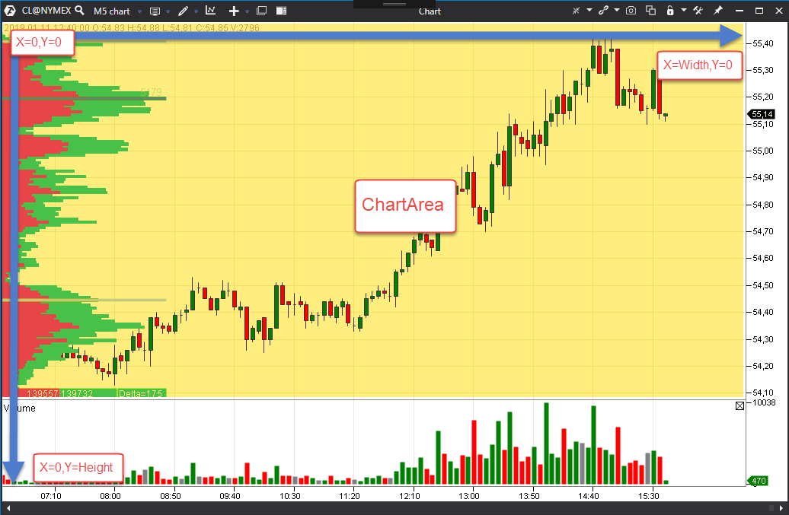
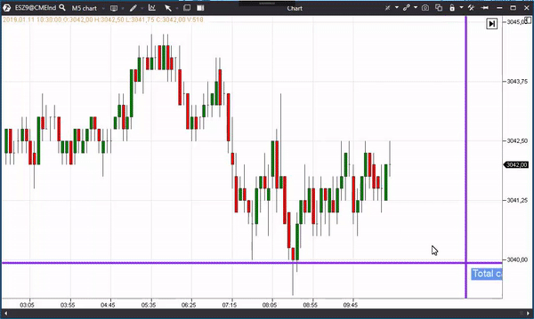

It is possible to redefine the OnRender method in the indicator and realize your own logic of data rendering.
It is necessary to set the EnableCustomDrawing flag ‘true’ for this method to start being called.
It is also necessary to set a list of layers where rendering will be carried out.
The list of layers is set through the SubscribeToDrawingEvents method, to which the DrawingLayouts flags are passed over.
The DrawingLayouts flags could be:
If the SubscribeToDrawingEvents is not called, the indicator will be rendered only when the most recent bar changes.
Example of calling the SubscribeToDrawingEvents, after which the OnRender method will be called at every new tick and after the final rendering:
SubscribeToDrawingEvents(DrawingLayouts.Final | DrawingLayouts.LatestBar);
The following objects are passed to the OnRender method:
Rendering by GDI+ like principles is actually carried out with the help of this context.
Several examples:
The origin or coordinates of the chart is in the upper left corner.
The coordinates system is shown in the picture below.

Every indicator has a container (Container property), which contains information about the rendering area (Region property). All main properties of the chart, mouse and keyboard could be obtained through the ChartInfo property.
The ChartArea property, which returns Region, was added for convenience of access to the chart area.
The MouseLocationInfo property, which returns ChartInfo.MouseLocationInfo, was added for convenience of access to the mouse data.
Also, there are ChartInfo extensions, which allow working with coordinates:
isStartOfBar = true, the bar beginning coordinate is returned, otherwise the bar middle coordinate is returnedisStartOnPriceLevel = true, the price level beginning coordinate is returned, otherwise the price level middle coordinate is returnedExample of an indicator, which draws the intersection and shows the volume of the bar, over which the mouse pointer is moved.

The DrawAbovePrice indicator property could be used for regulating the order of the indicator rendering.
If DrawAbovePrice = true, the indicator is rendered above the chart, otherwise - below the chart.
All drawing in OnRender goes through the RenderContext API (DrawString, DrawRectangle, RenderPen, RenderFont, etc.). This is the cross-platform rendering path — it works the same on Windows and on ATAS X. Draw through it, and do not use WPF brushes (System.Windows.Media.SolidColorBrush) or other Windows-only UI types — they are not converted and will prevent the indicator from loading on ATAS X (see the «Developing indicators for ATAS X» article).
For text, prefer reusing the chart's font — ChartInfo.PriceAxisFont (a RenderFont) or its FontFamily — so text renders with a font the platform already provides on the current OS. If you create a RenderFont with an explicit name, use a common font available on both Windows and macOS (for example, Arial) rather than a Windows-only font.